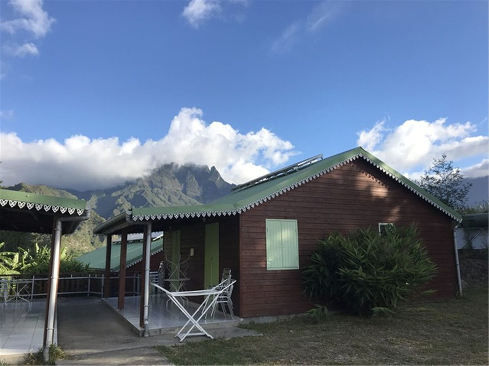
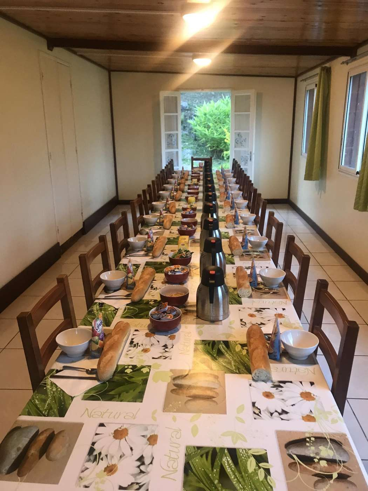

Gîte de randonnée · Aurère, cirque de Mafate
Quand vous passez à Aurère dans Mafate, venez dormir au Gîte Crête de la Marianne : une vue imprenable sur le Bras des Merles d’un côté, sur Aurère, le Col des Bœufs et le Piton des Neiges de l’autre.

L’essentiel
Le Bras des Merles d’un côté ; Aurère, le Col des Bœufs et le Piton des Neiges de l’autre.
À l’entrée de chaque dortoir, avec tables et chaises, pour se relaxer à l’issue d’une bonne randonnée.
Deux ensembles de dortoirs en lits superposés, chacun avec ses douches, lavabos et toilettes séparées.
Draps, oreillers et couvertures fournis : il vous reste juste votre serviette à glisser dans le sac.
La Crête de la Marianne en images
Venir à Aurère
Aurère se rejoint à pied, par les sentiers de Mafate : le gîte vous attend au calme, tout près du « centre » de l’îlet.
Équipements
Jusqu’à 20 randonneurs · 2 dortoirs de 6 · 2 dortoirs de 4 · salles d’eau réservées aux dortoirs.
Les randonneurs saluent la propreté, le calme et des dortoirs spacieux.
Ils en parlent
Les randonneurs retiennent l’accueil de Jennifer, la vue, la propreté et un dîner généreux.
« Nous avons passé un très beau moment. Un grand merci à Jennifer pour son accueil chaleureux et son attention. Nous avons particulièrement apprécié la propreté irréprochable du gîte, ainsi que sa cuisine savoureuse et très généreuse. … »
« Jennifer nous a très bien accueilli dans son gite. Nous avons adoré échanger avec elle sur la vie dans Mafate. Le repas et le petit-déjeuner étaient copieux et très bons ! Nous avons très bien dormi dans le dortoir qui était tout confort ! … »
« Gîte propre, calme et avec une vue imprenable. Très bon accueil. Repas copieux et très bon. … Prennent plaisir à expliquer comment ils fonctionnent, parler d’Aurère et de la culture locale. »
« Très bonne expérience dans ce gîte. Déjà la vue est sublime. L’accueil est très sympathique et souriant. Les dortoirs sont propres et spacieux. Les quantités servies au repas sont généreuses et nous avons eu droit à une bonne ambiance avec les autres randonneurs. Je recommande ! »
Extraits d’avis publiés sur Google. Lire tous les avis · Voir la fiche de l’Office de tourisme de l’Ouest

Le dîner
Le soir, le dîner se partage avec les autres marcheurs de passage. Les voyageurs citent un carry de poulet local servi avec du riz et des lentilles, et une belle occasion d’échanger sur la vie dans Mafate.
Le dîner et le petit-déjeuner se réservent à l’avance, avec vos dates. Pour le midi, les boutiques et snacks du « centre » d’Aurère sont tout proches.
Autour du gîte
Infos pratiques
À pied, par les sentiers de Mafate, jusqu’à l’îlet d’Aurère
Dîner et petit-déjeuner, à réserver à l’avance
Jusqu’à 20 personnes, en dortoirs de 4 ou de 6
Draps, oreillers et couvertures fournis ; serviette à prévoir
Un gîte de montagne au calme ; vos compagnons à quatre pattes restent à la maison
Français et créole
Chèque ou espèces
Sur demande, selon vos dates
Collectée par l’hôte pour les réservations en direct
De novembre à avril, consultez les bulletins de la préfecture et de l’ONF avant de partir
Réserver en direct
Indiquez la nuit de votre passage à Aurère et le nombre de randonneurs : le gîte vous répond personnellement, avec le tarif de la nuit et des repas.
Par e-mail : écrire au gîte